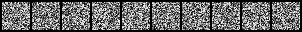
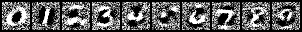
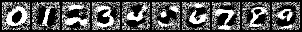
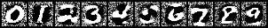

November 2026
You might have heard of training data, and you may even have used some of this data to train your models. It's quite common in deep learning, after all, but have you ever tried to train your data? This may be counterintuitive if you have any experience with training models. The entire point of a model, you may say, is to learn a good function on the domain of our data.
And you'd basically be right. But let's do it anyway. The idea for this comes from this paper, and they even give a few potential answers to the question of purpose you may have asked in the previous paragraph: it shows you what a model actually needs to see to learn each class, and (more evilly) you can use it to make a handful of images that wreck a model in a single training step.
Our plan here is actually pretty simple:
1) Get a few training
samples of random noise
2) Take some training steps (from either a
known or a random model initialization)
3) See how bad our
'trained' model is (using some loss function)
4) Backprop into our
initial training samples and make them better!
TL;DR we can just use normal deep learning machinery for this problem.
Let's try it on
MNIST.
If you aren't familiar, MNIST is just a dataset of handwritten digits along with their labels. Remember that our goal here isn't to make a good model! It's to create a few images that make our model reach high accuracy on MNIST as fast as possible. In a sense, we have to distill MNIST itself. We're gonna try distilling MNIST down into a single image per class, so 10 images total.
Because we don't care about our model too much, I'm gonna keep it simple. It's gonna be a linear layer from $\mathbb{R}^{784} \to \mathbb{R}^{32}$, then a ReLU, and then another linear layer from $\mathbb{R}^{32} \to \mathbb{R}^{10}$.
Let's get a baseline for how this works if we just sample one random image per class and train on those images, to see what our data has to beat. We're gonna pick one image from each digit class (0–9) and use those images to take one SGD step (with a learning rate of 0.5) from a random model initialization. After taking this single step, let's compute the model's accuracy on MNIST's official test set.
The table below shows the results for 5 sample seeds and 5 model seeds. The sample seeds give us 5 different sets of 10 training examples, and the model seeds give us 5 random model initializations.
| 0 | 1 | 2 | 3 | 4 | |
|---|---|---|---|---|---|
| 0 | 21.87% | 19.17% | 15.28% | 27.13% | 21.95% |
| 1 | 16.91% | 19.78% | 20.43% | 26.10% | 10.72% |
| 2 | 24.48% | 14.35% | 17.67% | 22.03% | 12.84% |
| 3 | 13.33% | 18.86% | 26.14% | 24.88% | 18.36% |
| 4 | 17.61% | 14.94% | 22.27% | 21.05% | 21.93% |
| $\mu = 19.60\% \qquad \sigma = 4.45\%$ | |||||
A random model would give a test accuracy of ~10%, so one grad step already takes us to much higher heights! Can we choose our training examples to improve this accuracy more?
I said before that we could backprop through this. And we can! But I
would like to spend some time talking about how we're going to do it
without hand-waving it away. What we want is: $$\frac{\partial
L}{\partial x}$$ where $L$ is our loss over MNIST's real training
setDon't train on test!
and $x$ is our fake data that we want to
improve. We can find this by using the chain rule! $$\frac{\partial
L}{\partial x} = \frac{\partial L}{\partial w_{new}} \times
\frac{\partial w_{new}}{\partial g} \times \frac{\partial g}{\partial
x}$$ And we can get all 3 of these partials from the steps we were going
to do before! Let's first go into more detail about the steps we're
going to take:
1) Pass some randomly initialized images $x$ with labels into our
randomly initialized model with weights $w$
2) Compute the loss (say, using cross-entropy) and backpropagate this to
get $g = \frac{\partial L_{synthetic}}{\partial w_{old}}$, where
$L_{synthetic}$ is the loss on our fake set of examples, and
$w_{old}$ is the old weights before taking a gradient step on this fake
set. This is just normal backprop giving you a gradient!
3) You can now get $\frac{\partial g}{\partial x}$. This is something
that I (and perhaps you) often don't think about, but your gradient $g$
is a function of $x$! We now have 1 out of the 3 components we need.
4) Take an optimizer step using $g$, with whatever optimizer you'd
like.Almost! Adam from a fresh start won't work: its first step is
$-\text{lr} \cdot g / (|g| + \epsilon) \approx -\text{lr} \cdot
\text{sign}(g)$, which barely changes when $x$ changes. So $\partial
w_{new} / \partial g \approx 0$, and no gradient makes it back to the
images.
Importantly, $\Delta w$ is a function of $g$ (your step relies on the
gradient information somehow). Thus: $w_{new} = w_{old} + \Delta w(g)$,
and $\frac{\partial w_{new}}{\partial g} = \frac{\partial \Delta
w}{\partial g}$. We now have 2 out of the 3 components we need.
5) Pass in training (don't train on test!) samples from your MNIST
dataset into your weights $w_{new}$ and record $L$. A normal backprop
gives you $\frac{\partial L}{\partial w_{new}}$. We now have everything
we need for $\frac{\partial L}{\partial x}$!
6) Now feed this $\frac{\partial L}{\partial x}$ into your
optimizerNote that this is a different optimizer with potentially a different
learning rate from the one in step 4.
and distill your
dataset! You probably want to repeat steps 1-6 with a newly initialized
model for a while.
Let's try implementing all of this.
# do all your imports and dataset loading!
# one learnable image per digit
synthetic_images = nn.Parameter(torch.rand(10, 1, 28, 28))
labels = torch.arange(10)
image_optimizer = torch.optim.SGD([synthetic_images], lr=IMAGE_OPTIM_LR)
for real_images, real_labels in dataset_loader:
# start from fresh weights for each batch
model = SomeModel()
w_old = dict(model.named_parameters())
# keep the weight gradients connected to the synthetic images
synthetic_loss = cross_entropy(model(synthetic_images), labels)
grads = torch.autograd.grad(synthetic_loss, w_old.values(), create_graph=True)
# take one differentiable SGD step
w_new = {
name: weight - WEIGHT_STEP_LR * g
for (name, weight), g in zip(w_old.items(), grads)
}
# backprop through w_new and the first gradient calculation into the images
real_logits = functional_call(model, w_new, (real_images,))
real_loss = cross_entropy(real_logits, real_labels)
# this backprop will chain through everything we talked about!
(pixel_grad,) = torch.autograd.grad(real_loss, synthetic_images)
synthetic_images.grad = pixel_grad
image_optimizer.step()
And let's run it (doing all our imports and defining our model ofc).
I had to use an image optimizer learning rate of 100, which is a bit cursed, but the RMS norm of the image updates was incredibly tiny. I think the qualitative results still seem to hold up! Below are some pictures from different stages of the 460 steps. These pictures are all the tensors clipped to within [0, 1].Note that all training done after this to measure the distillation used the unclipped version!




I think you can see the optimization process figuring out the shapes of numbers! This is thanks to the fresh random model at every step: the paper found that distilling for one fixed initialization gives images that look like pure noise, since they end up encoding that specific starting point. Some of them (like the 5 and the 8) are a bit cursed, probably due to the variance in those classes in MNIST. You can also see more static around the edges where there wasn't enough signal to create strong optimization pressure in either direction, and strong dark regions inside the 0 and around the 1 to demarcate that the model should really quickly learn to mask out the center to classify 0s right.
But the question remains: have we compressed MNIST down to 10 pictures? If we now take one optimizer step on these 10 images, how well does it do? Just like in the baseline, we take one SGD step at a learning rate of 0.5 and measure accuracy on the MNIST test set.
| 0 | 1 | 2 | 3 | 4 |
|---|---|---|---|---|
| 56.97% | 53.19% | 62.51% | 58.74% | 57.39% |
| $\mu = 57.76\% \qquad \sigma = 3.36\%$ | ||||
We crushed the baseline of a random MNIST image by 38.16%. This fact alone may not be surprising; we are getting what we optimized for, after all, but I still think it's very cool to see the pictures that came about! Let's actually sweep the baseline (same settings) for the number of random images per class and optimizer steps taken and plot where this curve matches our $\mu = 57.76\%$ (I wanna see how good our MNIST distillation is :D).
With 1 random image per class, it reached only 45% test accuracy within 100 steps! With 10 images per class (10x our distilled dataset's size!), you still need ~5 steps to match the accuracy.
I think our distillation is pretty good.